Click any image for its full-resolution PNG. Raw panels are unchanged native photographic pixels. Cyan: visible outer/occlusion edges near photographic transition support; gray: unsupported outer/occlusion edges; purple: visible bore boundaries established by isolated physical rendering. Orange/yellow photographic transitions are local evidence, not certified complete bead contours. Candidate dark seams are not independently verified physical separations. No black photographic silhouettes were inferred.
Exactly −100…99 target bodies; complete necklace occlusion/contact. First-40 crops show photographic context; labels and physical identities remain conditional. Material distances measure failure to cover a known interior, not an invented complete photographic contour. Comparison and buffer regions are historically exposed and were excluded from fitting.
Report · Reproduction · Verification · Worst 20 numerical records
| Model / set | Score | Material explained | Paper intrusion | One-body core | Transition p95 / max | Worst core p95 |
|---|---|---|---|---|---|---|
| R297-2337 / development | 2.913 | 84.5% | 0.00% | 69.5% | 8.1 / 11.4px | 12.2px |
| R297-2337 / comparison | 2.663 | 85.9% | 0.00% | 67.6% | 9.2 / 10.8px | 9.5px |
| R306-2405 / development | 2.838 | 90.0% | 0.15% | 69.8% | 8.0 / 10.8px | 13.6px |
| R306-2405 / comparison | 3.172 | 88.9% | 1.54% | 55.9% | 8.0 / 10.4px | 9.8px |
| R309-2733 / development | 3.152 | 87.6% | 0.11% | 62.8% | 9.2 / 12.2px | 13.7px |
| R309-2733 / comparison | 2.418 | 88.9% | 1.43% | 69.6% | 7.7 / 10.0px | 7.6px |
| R312-best / development | 2.764 | 89.8% | 0.19% | 71.0% | 8.1 / 10.8px | 12.7px |
| R312-best / comparison | 3.022 | 88.4% | 1.78% | 58.7% | 8.2 / 10.0px | 9.3px |
| R312-local / development | 3.184 | 87.4% | 0.11% | 63.6% | 9.0 / 12.0px | 13.4px |
| R312-local / comparison | 4.378 | 81.7% | 0.78% | 48.6% | 8.1 / 10.4px | 19.8px |
| R313-initial-R297-2337 / development | 2.660 | 85.8% | 0.01% | 70.3% | 8.0 / 11.0px | 10.6px |
| R313-initial-R297-2337 / comparison | 4.040 | 84.8% | 0.00% | 49.4% | 9.0 / 11.0px | 16.3px |
| R313-initial-R306-2405 / development | 2.635 | 89.6% | 0.07% | 72.5% | 8.0 / 11.7px | 11.5px |
| R313-initial-R306-2405 / comparison | 2.980 | 88.5% | 0.96% | 61.9% | 8.9 / 10.6px | 11.2px |
| R313-initial-R312-best / development | 2.627 | 90.8% | 0.27% | 72.6% | 8.1 / 11.7px | 12.0px |
| R313-initial-R312-best / comparison | 3.063 | 89.4% | 1.91% | 59.1% | 8.5 / 10.8px | 10.8px |
| R313-focused-1 / development | 2.476 | 97.2% | 2.16% | 68.4% | 9.1 / 13.0px | 8.6px |
| R313-focused-1 / comparison | 3.433 | 96.4% | 4.04% | 61.3% | 10.0 / 13.0px | 17.0px |
| R313-focused-2 / development | 2.498 | 88.6% | 0.03% | 72.2% | 8.0 / 11.7px | 9.8px |
| R313-focused-2 / comparison | 3.833 | 87.4% | 0.01% | 52.3% | 9.2 / 11.4px | 13.6px |
| R313-focused-3 / development | 2.501 | 92.0% | 0.35% | 74.0% | 9.1 / 12.8px | 11.0px |
| R313-focused-3 / comparison | 2.649 | 91.5% | 2.15% | 64.9% | 9.0 / 10.4px | 8.5px |
| R313-focused-4 / development | 2.878 | 87.0% | 0.05% | 65.4% | 9.0 / 12.0px | 10.8px |
| R313-focused-4 / comparison | 2.490 | 87.9% | 1.04% | 67.4% | 8.7 / 10.2px | 8.1px |
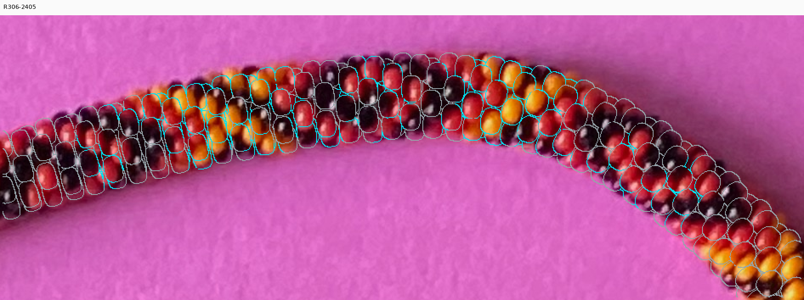
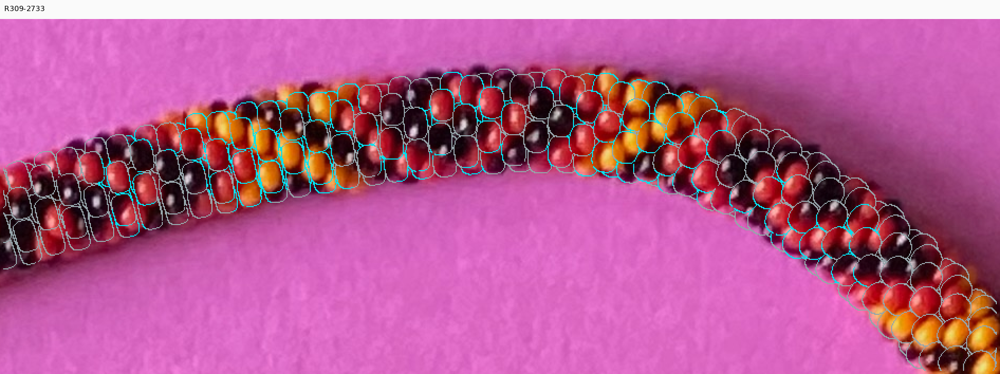
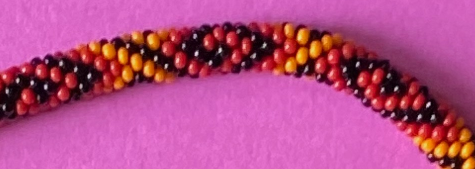
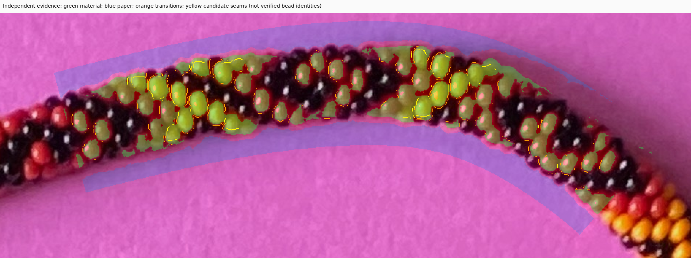
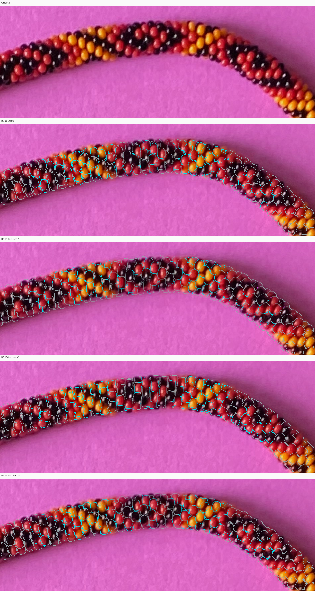
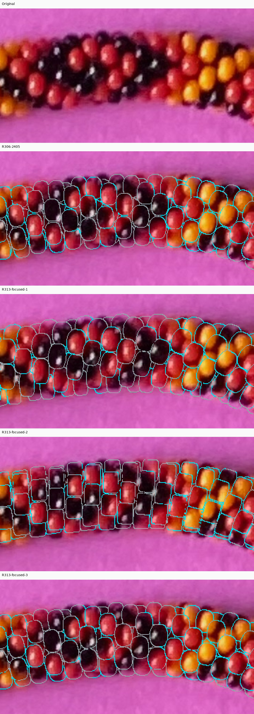
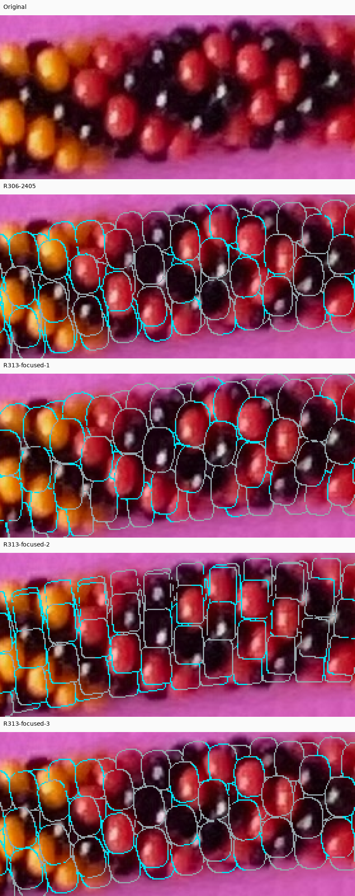
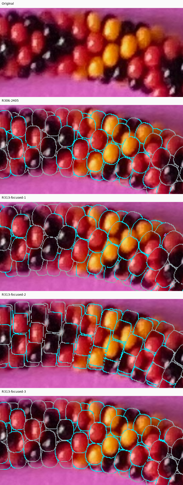
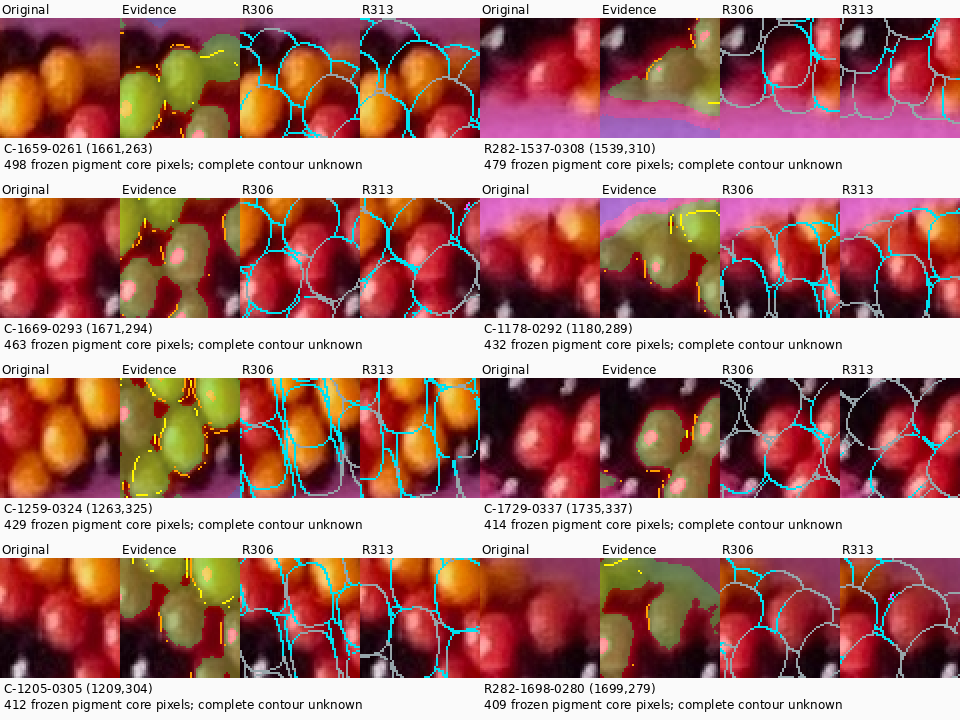
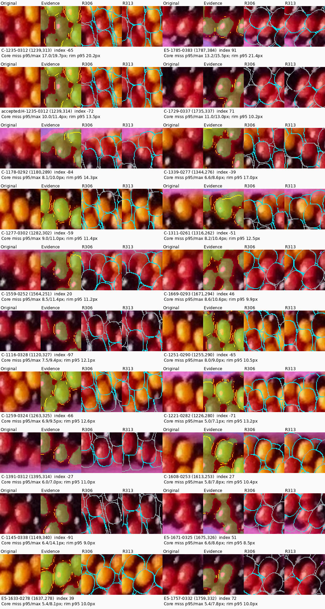
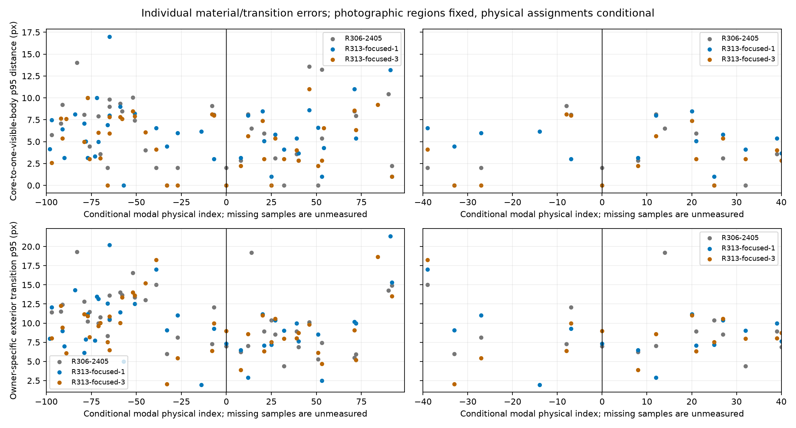